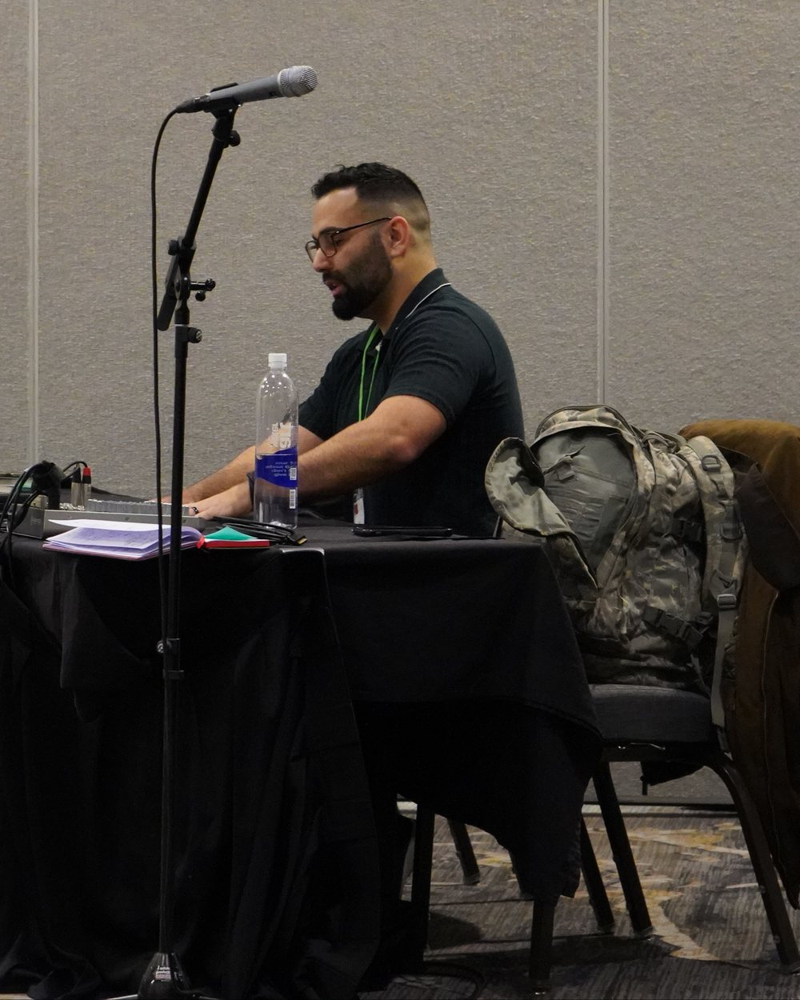

About
Michael C. Barros
I'm interested in religion and religious experience — how it's generated, how it's expressed, and what it means.
My work integrates research, teaching, and applied systems experience across academic and non-academic settings.

What I do now
Current roles
- Scholar PhD candidate studying dreams, religion, and cognition at National University.
- Instructor Adjunct philosophy instructor at University of the People; instructor at Waypoint Institute.
- Editor Co-editor of academic volumes at Bloomsbury Academic; acquisitions & developmental editing at Eclogue Press (fantasy & sci-fi fiction).
- Operator Director of Business Affairs at OYD Live.
- Discussion Group Lead Certificate in Evangelization: The Evangelical Ethos of Bishop Barron · Word on Fire Institute.
Dissertation
Sensorimotor Content in Dreams and Waking Religious Cognition
The dissertation examines whether simulation richness in dream content predicts religiosity and paranormal belief. Using a grounded cognition framework — modeling dreaming as a high-intensity simulation process — and longitudinal dream data, it tests how variation in simulated experience relates to supernatural agent concepts and belief orientation.
Education
Degrees
- PhD in Psychology National University · Dissertation: Sensorimotor Content in Dreams and Waking Religious Cognition ABD — in progress
- MA in Biblical & Theological Studies Trevecca Nazarene University 2021
- BA in Mathematics Southern New Hampshire University · Applied Mathematics 2018
- BS in Electronics Engineering Technology ECPI University 2015
- AAS in Air & Space Operations Technology Community College of the Air Force 2013
Certifications
Certifications & continuing education
- Six Sigma Black Belt The Council for Six Sigma Certification 2025
- Researchers — Social and Behavioral Focus CITI Program 2025
- Basic Instructor Course (BIC) U.S. Air Force 2014
- Advanced Evangelical Ethos of Bishop Barron Word on Fire Institute · currently enrolled In progress
- Certificate in Evangelization: The Evangelical Ethos of Bishop Barron Word on Fire Institute 2025